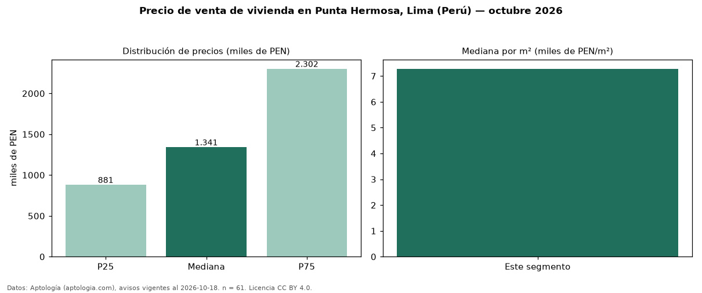

Precio de venta de vivienda en Punta Hermosa, Lima (Perú) — octubre 2026
PEN 1,34 millones es el precio mediano de vivienda en venta en Punta Hermosa, Lima (Perú) (n = 61 avisos). Por metro cuadrado, la mediana es PEN 7.282/m² (n = 61 avisos con área). Por tipo: 57 % casas, 41 % departamentos, 2 % minidepartamentos. La mitad central de los avisos va de PEN 881.250 a PEN 2,30 millones (razón 2,6), una dispersión alta. El área mediana anunciada es 200 m². El segmento con más oferta es el de 3 o más habitaciones (54 avisos, mediana PEN 1,47 millones). Datos: Aptología (aptologia.com), CC BY 4.0 — https://www.aptologia.com/pe/venta/lima. Archivos: PDF, CSV con las cifras y gráfica PNG.

| Avisos únicos | 61 |
|---|---|
| Percentil 25 | COP 881.250 |
| Mediana | COP 1.341.448 |
| Percentil 75 | COP 2.301.810 |
| Mediana por m² | COP 7.281 |
Fuente: avisos vigentes de portales inmobiliarios recopilados por Aptología, deduplicados (mínimo 30 avisos únicos por celda). Precios pedidos, no cerrados. Fecha: 2026-10-18.